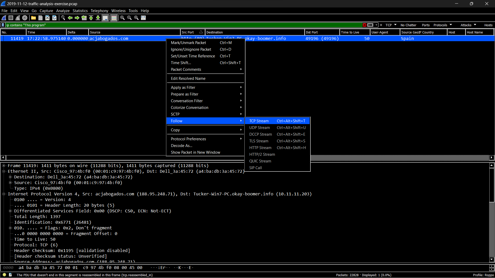

Featuring:
• In-depth malware traffic analysis using Wireshark, employing advanced display
filters to identify and isolate malicious network activity within diverse environments,
including Active Directory.
• TCP stream analysis in Wireshark to trace the flow of malicious traffic, answering
critical questions about the infected system, such as the IP address, affected OS, and device
type.
• Various threat intelligence platforms such as VirusTotal to enhance malware analysis,
extracting and generating SHA-256 hashes for suspicious files, thereby contributing valuable
insights into the identification and classification of malware such as Redline Stealer, Trickbot
and IcedID.

A Malware traffic analysis exercise from a pcap posted on Malware-Traffic-Analysis.net on
2020-05-28 by Brad Duncan (Unit 42) featuring Redline Stealer malware.
Tools Used: Security Onion Console, Network Miner,
Wireshark,
Mitre ATT&CK,
Virus Total,
URLHaus,
MalwareBazaar,
Suricata,
SHA256
Redline-Stealer is a Windows-based malware categorized as an information stealer. It is
designed
to infiltrate systems covertly and exfiltrate sensitive information, including login
credentials, cryptocurrency wallets, personal data, and other valuable information to remote
command and control (C2) servers operated by threat actors.
A Malware traffic analysis exercise from a pcap posted on Malware-Traffic-Analysis.net on
2023-05-26 by Brad Duncan (Unit 42) featuring IcedID malware.
Tools Used: Wireshark, Zeek, RITA, MITRE ATT&CK, VirusTotal, URLHaus, SHA256
Trickbot is a type of malware that primarily functions as a banking Trojan to steal sensitive
financial information from infected systems that typically is distributed through malicious
email attachments, phishing campaigns, exploit kits, or malvertising. While Trickbot initially
focused solely on banking fraud, it has expanded its targets to include various industries such
as finance, healthcare, manufacturing, and critical infrastructure since 2016.

A Malware traffic analysis exercise from a pcap posted on Malware-Traffic-Analysis.net on
2020-05-28 by Brad Duncan (Unit 42) featuring Trickbot malware.
Tools Used: Wireshark, VirusTotal, SHA256
Trickbot is a type of malware that primarily functions as a banking Trojan to steal sensitive
financial information from infected systems that typically is distributed through malicious
email attachments, phishing campaigns, exploit kits, or malvertising. While Trickbot initially
focused solely on banking fraud, it has expanded its targets to include various industries such
as finance, healthcare, manufacturing, and critical infrastructure since 2016.

A Malware traffic analysis exercise from a pcap posted on Malware-Traffic-Analysis.net on
2019-11-12 by Brad Duncan (Unit 42).
Tools Used: Wireshark, VirusTotal, OUI Lookup, MD5
A Malware traffic analysis exercise from a pcap posted on Malware-Traffic-Analysis.net on
2014-11-16 by Brad Duncan (Unit 42) featuring Rig Exploit Kit Malware.
Tools Used: Wireshark, Virus Total, MD5